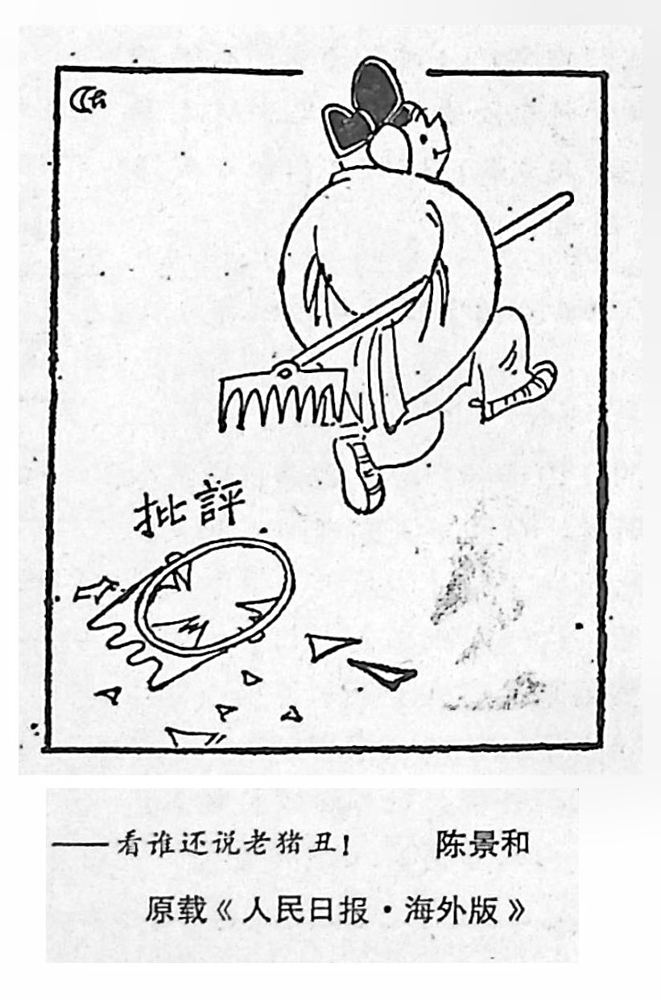

陈景和 《人事》1988年第4期（总第31期），第46页（原载《人民日报·海外版》）
——看谁还说老猪丑！
“Now Let's See Who Still Calls Old Pig Ugly!”
- Caption
- ——看谁还说老猪丑！
—Now let's see who still calls Old Pig ugly! - Text in the drawing
- 批评
Criticism - Description
- Zhu Bajie, the pig of Journey to the West, shoulders his rake and strides off, leaving behind a smashed mirror labeled “criticism.”
- Note
- 猪八戒照镜子——里外不是人, “Pigsy looks in the mirror: ugly whichever way he turns,” is a common saying. Breaking the mirror of criticism solves the problem.
- Artist
- Chen Jinghe 陈景和
- Reprinted from
- 《人民日报·海外版》 — Renmin ribao, haiwai ban (People's Daily, Overseas Edition)
- Published in
- 《人事》1988年第4期（总第31期）, p. 46
- Themes
- Bureaucratism · Fable, legend and history

Cite
Chen Jinghe, “——看谁还说老猪丑！” [“Now Let's See Who Still Calls Old Pig Ugly!”], Renshi (Personnel) 《人事》, 1988, no. 4, p. 46.